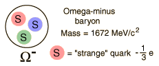

Color
Color is the strong interaction analog to charge in the electromagnetic force. The term "color" was introduced to label a property of the quarks which allowed apparently identical quarks to reside in the same particle, for example, two "up" quarks in the proton. To allow three particles to coexist and satisfy the Pauli exclusion principle, a property with three values was needed. The idea of three primary colors like red, green, and blue making white light was attractive, and language about "colorless" particles sprang up. It has nothing whatever to do with real color, but provides three distinct quantum states. The property can be considered something like a "color charge" with three distinct values, with only color neutral particles allowed. The terms "color force" and even "quantum chromodynamics" have been used, extending the identification with color terms. The antiquarks have anti-colors, so the mesons can be colorless by having a red and an "anti-red" quark. The idea of color is supported by the fact that all commonly observed particles have either three quarks (baryons) or two (mesons), the combinations which can be "colorless" or "color neutral" with the three values of color. This does not exclude "di-baryons" with 6 quarks and other combinations of more than three. The only experimental indication of the presence of such particles is recent evidence for a penta-quark particle.
|  |
The rationale for the concept of color can be highlighted with the case of the omega-minus, a baryon composed of three strange quarks. Since quarks are fermions with spin 1/2, they must obey the Pauli exclusion principle and cannot exist in identical states. So with three strange quarks, the property which distinguishes them must be capable of at least three distinct values.
|
|
Index |